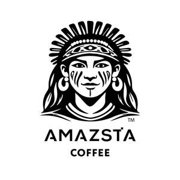

Trade Mark Journal No.2026/003 16 January 2026
UK00004317590 30 December 2025 (20,21,30,35,40,43)

- Class 20
- Wood statues; Statues of wood, wax, plaster or plastic; Figurines of wood; Wood carvings; Ornamental statues made of wood; Figurines [statuettes] of wood, wax, plaster or plastic; Statuettes of wood, wax, plaster or plastic; Figurines of wood, wax, plaster or plastic; Commemorative statuary cups of wood, wax, plaster or plastic; Busts of wood; Wooden sculptures; Busts of wood, wax, plaster or plastic; Sculptures made from wood; Ornamental sculptures made of wood; Crucifixes of wood, wax, plaster or plastic, other than jewelry; Crucifixes of wood, wax, plaster or plastic, other than jewellery; Ornamental figurines made of wood; Figurines made of wood resin; Figurines made of wood; Wall decorations of wood; Plaques made of wood; Plaster statues; Statues of plaster; Miniature furniture made of wood; Works of art of wood, wax, plaster or plastic; Art (Works of -) of wood, wax, plaster or plastic; Carvings of plaster; Plastic statues; Prize cups of wood, wax, plaster or plastic; Wood crates; Miniature furniture made of wood fibre; Statues of ivory; Wax statues; Wood planters; Staves of wood; Furniture made from wood; Wood barrels; Carvings of plastic; Caskets made of wood; Statues of bone; Door furniture made of wood; Wood bedsteads; Bedsteads of wood; Bedsteads [wood]; Wooden furniture; Statues made of plaster; Wood ribbon; Photograph frames of wood; Garden furniture manufactured from wood; Wood doorknobs; Prefabricated doors of wood for furniture; 3D wall art made of wood.
- Class 21
- Coffee mugs; Coffee cups; Non-electric coffee drippers for brewing coffee; Coffee grinders; Coffee stirrers; Coffee pots; Coffee scoops; Coffee percolators, non-electric; Percolators (Coffee -), non-electric; Non-electric coffee percolators; Coffee filters not of paper being part of non-electric coffee makers; Coffee filters, not of paper, being part of non-electric coffee makers; Coffee pots [non-electric]; Non-electric coffee pots; Coffee services of ceramic; Vacuum coffee bean containers; Coffee brewers (Non-electric -); Vacuum coffee makers; Coffee makers, non-electric; Non-electrical coffee grinders; Coffee grinders, hand-operated; Hand-operated coffee grinders; Non-electric coffee frothers; Coffee services of china; Tea cups; Coffee filters, non-electric.
- Class 30
- Coffee; Decaffeinated coffee; Iced coffee; Chocolate coffee; Coffee drinks; Coffee beans; Mixtures of malt coffee with coffee; Coffee beverages; Unroasted coffee; Coffee (Unroasted -); Caffeine-free coffee; Coffee extracts for use as substitutes for coffee; Coffee essences for use as substitutes for coffee; Coffee substitutes [artificial coffee or vegetable preparations for use as coffee]; Malt coffee; Coffee pods; Coffee beverages with milk; Flavoured coffee; Coffee bags; Unroasted coffee beans; Coffee flavorings; Coffee capsules; Mixtures of malt coffee extracts with coffee; Instant coffee; Roasted coffee beans; Freeze-dried coffee; Coffee flavourings; Coffee oils; Beverages with coffee base; Beverages with a coffee base; Espresso; Coffee based drinks; Ground coffee; Coffee in whole-bean form; Coffee extracts; Sugar-coated coffee beans; Beverages made from coffee; Beverages made of coffee; Ground coffee beans; Drip bag coffee; Substitutes (Coffee -); Coffee substitutes; Aerated drinks [with coffee, cocoa or chocolate base]; Coffee essences; Coffee based beverages; Chicory for use as substitutes for coffee; Mixtures of coffee; Coffee mixtures; Cappuccino; Aerated beverages [with coffee, cocoa or chocolate base]; Chicory [coffee substitute]; Prepared coffee and coffee-based beverages; Coffee concentrates; Coffee in brewed form; Mixtures of coffee and chicory; Coffee, teas and cocoa and substitutes therefor; Mixtures of coffee essences and coffee extracts; Mixtures of malt coffee with cocoa; Ice beverages with a coffee base; Powdered coffee in drip bags; Prepared coffee beverages; Coffee essence; Malt coffee extracts; Mixtures of coffee and malt; Coffee [roasted, powdered, granulated, or in drinks]; Chai tea; Tea; Barley for use as a coffee substitute; Tea beverages with milk; Chocolate bark containing ground coffee beans; Extracts of coffee for use as flavours in beverages.
- Class 35
- Retail services in relation to coffee.
- Class 40
- Grinding of coffee; Coffee roasting and processing.
- Class 43
- Coffee shops; Coffee shop services; Coffee bar services.
Amazonista hospitality ltd